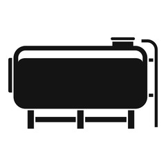

Empowering Fiberglass Globally
Baltic Industrial Composites, Ltd.” is an international company that
unifies experts of the fiberglass industry. With roots deeply embedded
in Scandinavia and the Baltic States, our collective expertise spans
decades, driving excellence in fiberglass manufacturing worldwide.
Our commitment to excellence is reflected in our adherence to
standards such as AD-Merkblatt (Germany), EN13121 (Europe), ASME RTP
2000-1 (USA), and PLN-83 (Sweden). With cutting-edge technology and a
skilled team, we ensure that every product we create not only meets
but exceeds industry benchmarks.
Choose us for reliable and innovative solutions that are in line with
international standards. Your satisfaction is our commitment, and we
deliver quality that stands the test of time.

Tanks
Manufacturing robust and durable tanks tailored to your
specifications, ensuring safe storage solutions for various liquids
and gases.
Gas purification equipment
Crafting advanced gas purification systems engineered to enhance air
quality and ensure environmental compliance in industrial settings.
Gas Ducts
Fabricating high-performance gas ducts designed to efficiently
transport gases, with a focus on reliability and longevity.
Chemical Process Equipment
Specializing in the production of chemical process equipment that
meets stringent industry standards, facilitating smooth and efficient
manufacturing processes.
Site Manufacturing
Offering on-site manufacturing solutions to streamline project
timelines and ensure seamless integration of fiberglass components
into existing infrastructure.
Other
Providing customized fiberglass solutions for diverse industrial
applications, with a commitment to innovation and excellence.
Designing
Working according to: standards EN13121 (Europe), ASTM RTP 2000-1
(USA), DIN 16965.
Perform calculations using FEM analysis methods. Calculations are made
by program ANSYS or NASTRAN. Drawings and 3D modelin in AutoCAD &
SolidWorks.
The material applicability is controlled by material manufacturers.
Quality control
Quality control and documentation is done by our Quality Control
Department.
We provide the following tests:
- Barcol hardness test
- Glass content and its relevance to the design
- Thickness compliance
- Leak proof
- Pressure test
- Determination of flexural, tensile and shear strength tests
- Outsourcing of specific laboratory tests
-
Leveraging the certified inspection organization, such as
Inspecta, TUV